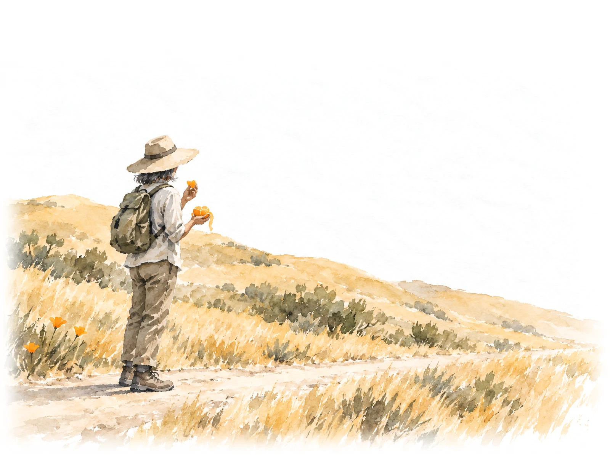
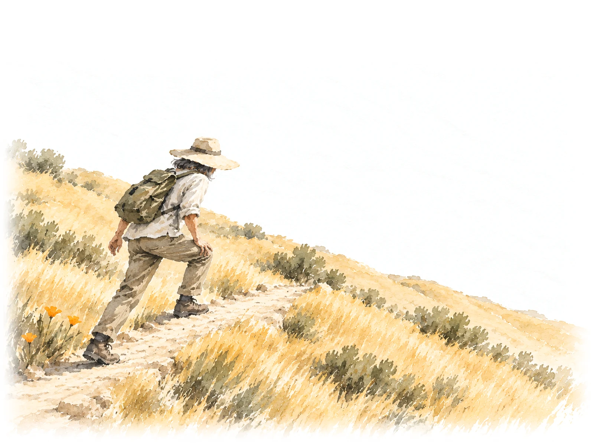
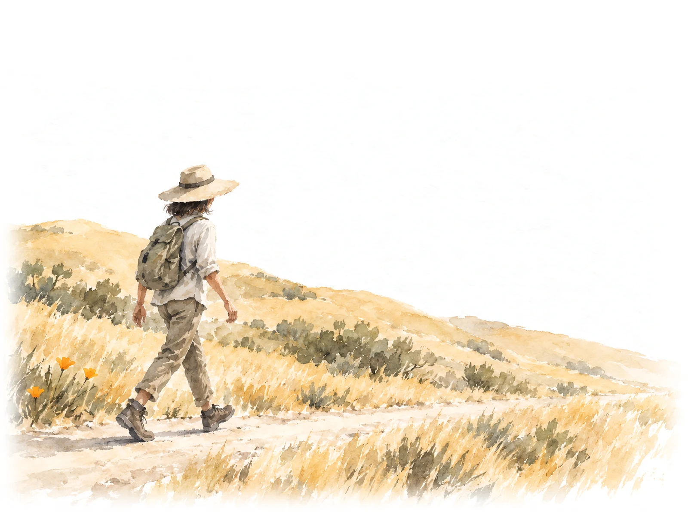
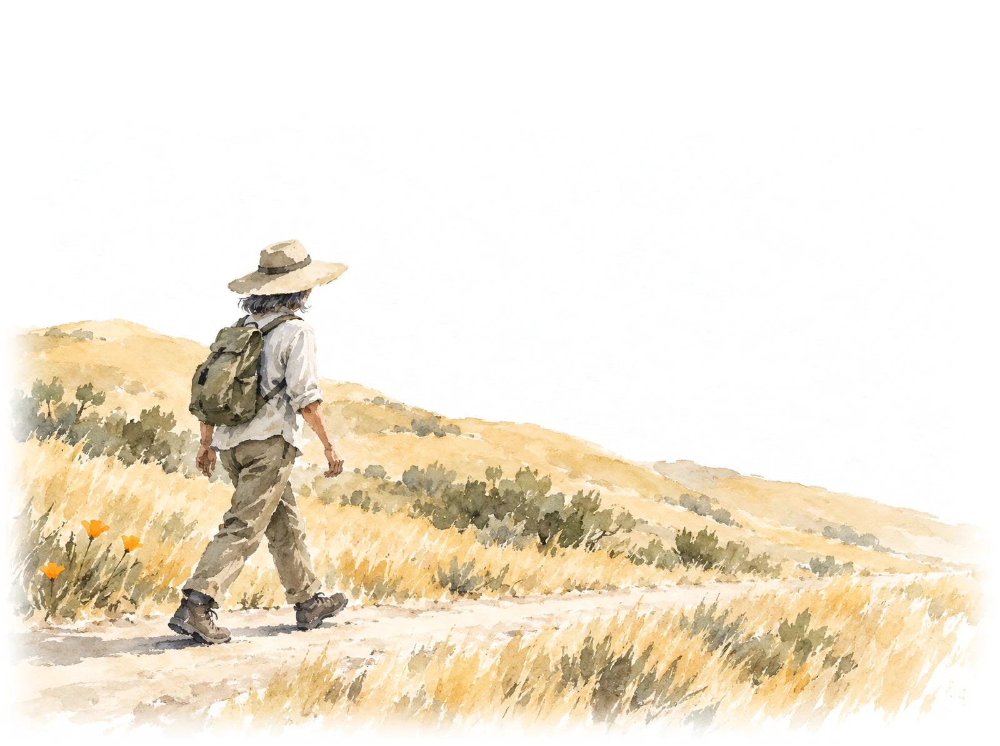
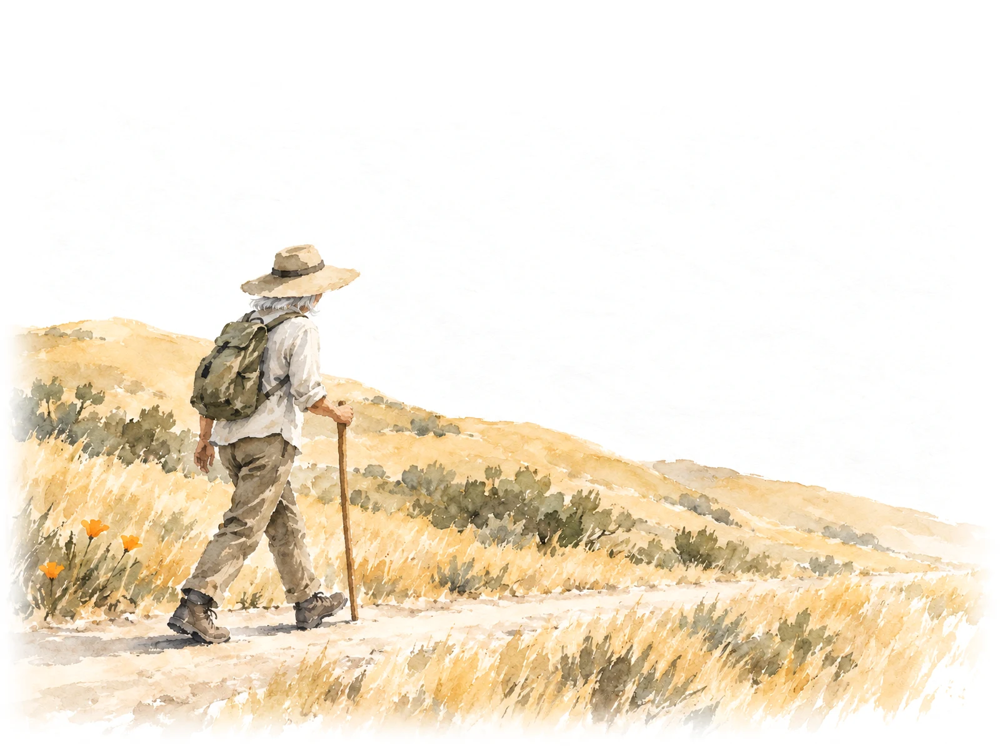
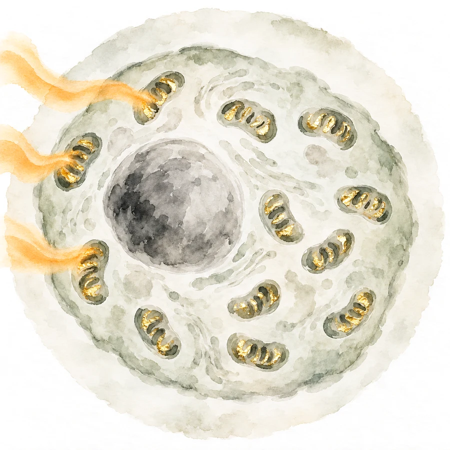
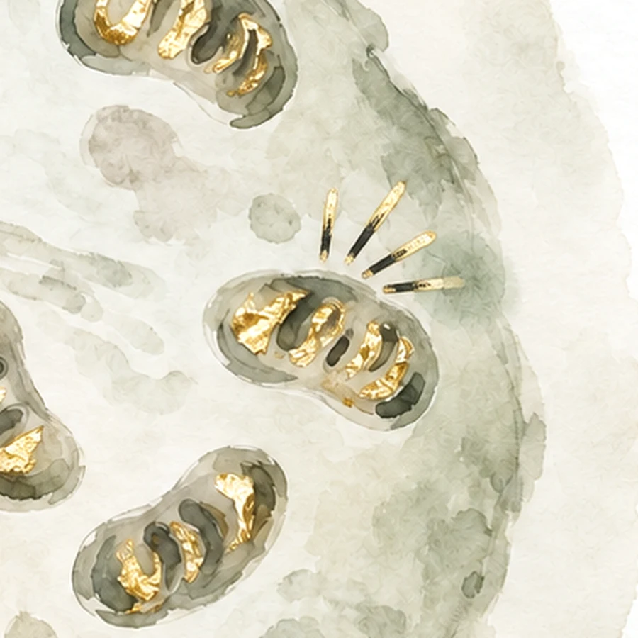
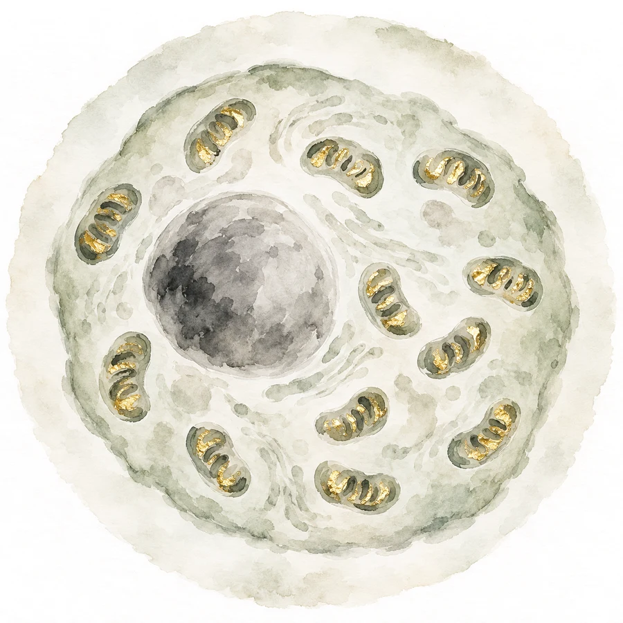
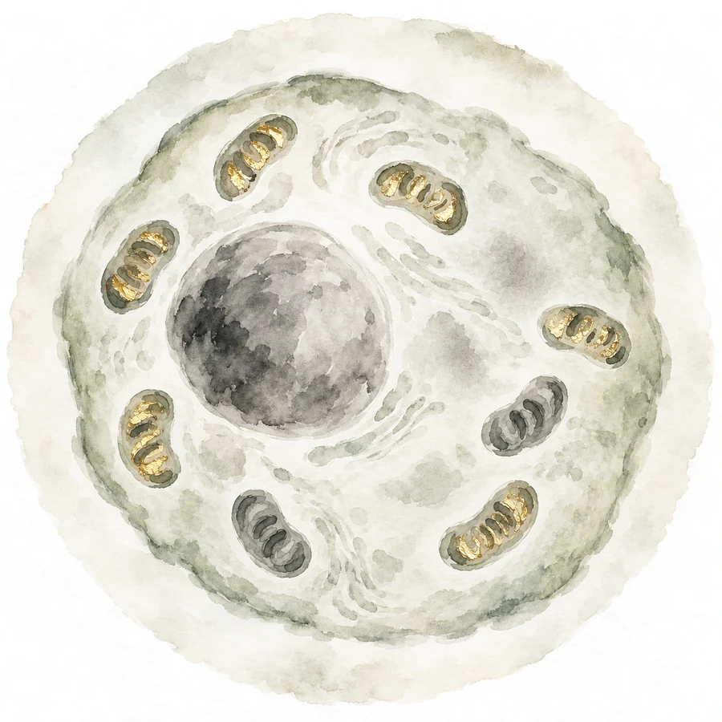
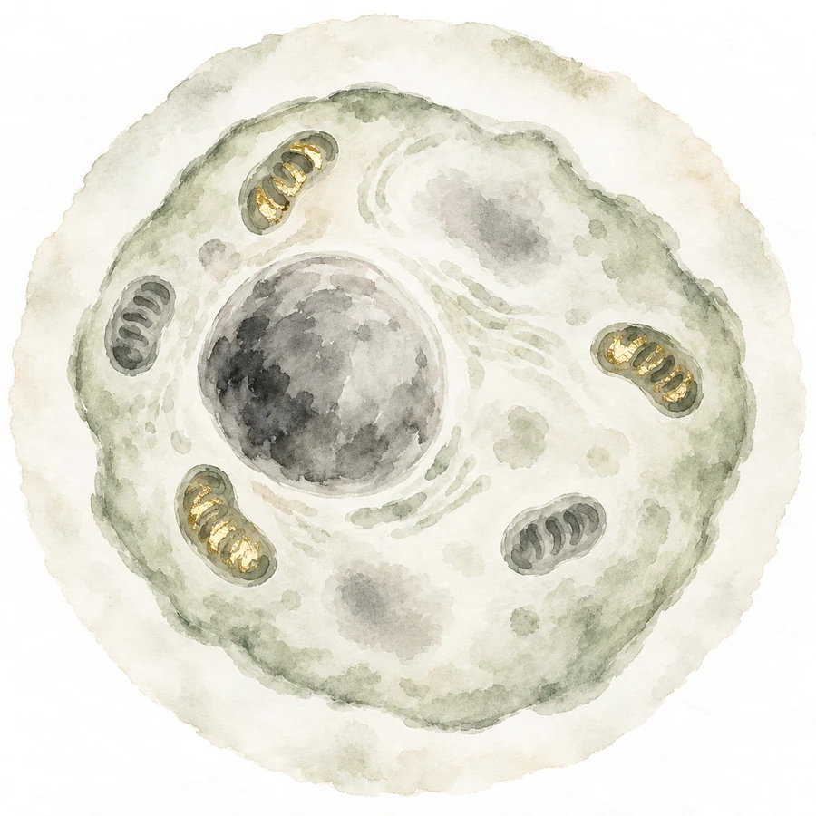

<title>Hiker Science Mockup</title>
<meta name="claude:viewport-fit-sides" content="cover">
<link rel="preconnect" href="https://fonts.googleapis.com">
<link rel="preconnect" href="https://fonts.gstatic.com" crossorigin>
<link rel="stylesheet" href="https://fonts.googleapis.com/css2?family=Ysabeau:wght@400;500&family=Instrument+Sans:wght@400;500&display=swap">
<style>
  /* Layout: a working copy of the homepage's science section on its rice paper (words left, painting
     right; on a phone: tabs, painting, words), then a short note. One light world, like the site:
     the paintings multiply onto the paper, so this page keeps the paper in both themes. */
  :root {
    --paper: #f6f3ec;
    --ink: #1c1a16;
    --grey: #5f5a50;
    --hair: #d9d2c2;
    --gold: #8a6a22;
    --title: "Ysabeau", "Iowan Old Style", "Palatino Linotype", Georgia, serif;
    --body: "Instrument Sans", system-ui, -apple-system, "Segoe UI", Roboto, sans-serif;
    color-scheme: light;
  }

  [hidden] { display: none !important; }
  body {
    background: var(--paper) url("img/paper.webp") center top / 900px auto repeat;
    color: var(--ink);
    font: 18px/1.55 var(--body);
  }
  .page {
    max-width: 1240px;
    margin: 0 auto;
    padding-left: max(16px, env(safe-area-inset-left, 0px));
    padding-right: max(16px, env(safe-area-inset-right, 0px));
    padding-block: 36px 80px;
    display: grid;
    gap: 56px;
  }
  h1, h2, h3 {
    font-family: var(--title);
    font-weight: 500;
    line-height: 1.12;
    text-wrap: balance;
    margin: 0;
  }
  p { margin: 0; }
  .tag {
    font-size: 0.78rem;
    letter-spacing: 0.09em;
    text-transform: uppercase;
    color: var(--gold);
  }

  .intro { display: grid; gap: 12px; max-width: 46rem; }
  .intro h1 { font-size: clamp(2rem, 5.4vw, 3rem); }
  .intro p { color: var(--grey); }

  /* the section itself */
  .replica {
    display: grid;
    grid-template-columns: minmax(0, 1fr) minmax(0, 1.15fr);
    grid-template-areas:
      "head  stage"
      "tabs  stage"
      "topic stage";
    grid-template-rows: auto auto 1fr;
    column-gap: clamp(28px, 5vw, 72px);
    row-gap: 28px;
    align-items: start;
    border-top: 1px solid var(--hair);
    padding-top: 40px;
  }
  .head { grid-area: head; display: grid; gap: 14px; }
  .head h2 { font-size: clamp(2.1rem, 4.6vw, 3.4rem); font-weight: 400; }
  .head p { color: var(--grey); max-width: 34rem; }

  .tabs {
    grid-area: tabs;
    display: flex;
    gap: clamp(16px, 2.4vw, 30px);
    border-bottom: 1px solid var(--hair);
  }
  .tabs button {
    appearance: none;
    background: none;
    border: 0;
    padding: 10px 0 12px;
    min-height: 48px;
    font: 500 clamp(1rem, 1.6vw, 1.2rem)/1.2 var(--body);
    color: var(--grey);
    position: relative;
    cursor: pointer;
  }
  .tabs button[aria-selected="true"] { color: var(--ink); }
  .tabs button::after {
    content: "";
    position: absolute;
    left: 0;
    bottom: -1px;
    height: 2px;
    width: 100%;
    background: var(--ink);
    transform: scaleX(0);
    transform-origin: left;
    transition: transform 0.7s ease;
  }
  .tabs button[aria-selected="true"]::after { transform: scaleX(1); }
  .tabs button:focus-visible { outline: 2px solid var(--ink); outline-offset: 4px; }

  .topic { grid-area: topic; display: grid; gap: 16px; align-content: start; }
  .topic h3 { font-size: clamp(1.45rem, 2.4vw, 1.85rem); }
  .topic > p { color: var(--grey); max-width: 34rem; }
  .topic ul { list-style: none; margin: 0; padding: 0; display: grid; gap: 8px; }
  .topic li { display: flex; gap: 12px; }
  .topic li::before { content: "\2014"; color: var(--grey); }
  .actions { display: flex; flex-wrap: wrap; align-items: center; gap: 14px 26px; margin-top: 6px; }
  .pill {
    display: inline-flex;
    align-items: center;
    gap: 10px;
    min-height: 54px;
    padding: 0 28px;
    border-radius: 999px;
    background: var(--ink);
    color: var(--paper);
    font-weight: 500;
  }
  .link { border-bottom: 1px solid var(--grey); padding-bottom: 4px; }

  /* the painting */
  .stage-wrap { grid-area: stage; margin: 0; display: grid; gap: 14px; align-content: start; min-width: 0; }
  .illus { font-size: 0.85rem; color: var(--grey); }
  .stage { position: relative; width: 100%; max-width: 100%; aspect-ratio: 1600 / 1195; }
  .stage img {
    position: absolute;
    inset: 0;
    width: 100%;
    height: 100%;
    mix-blend-mode: multiply;
    opacity: 0;
    transition: opacity 0.5s ease;
  }
  .stage img.on { opacity: 1; }
  .stage svg { position: absolute; inset: 0; width: 100%; height: 100%; overflow: visible; }
  .stage svg line {
    stroke: var(--ink);
    stroke-opacity: 0.7;
    stroke-width: 1.25;
    vector-effect: non-scaling-stroke;
    transition: all 0.5s ease;
  }
  /* the peek inside: its own paper, so the scene never shows through it */
  .window {
    position: absolute;
    border-radius: 50%;
    overflow: hidden;
    border: 1.25px solid rgb(28 26 22 / 0.7);
    background: var(--paper) url("img/paper.webp") center / 600px auto;
    isolation: isolate;
  }
  .stage .window img { inset: 0; }
  .dot {
    position: absolute;
    width: 9px;
    height: 9px;
    margin: -4.5px 0 0 -4.5px;
    border-radius: 50%;
    background: var(--ink);
    opacity: 0.75;
    transition: left 0.5s ease, top 0.5s ease;
  }
  .peek {
    font-size: 1.02rem;
    line-height: 1.4;
    color: var(--ink);
    margin-left: 50%;
    min-height: 2.8em;
  }

  .age { display: grid; grid-template-columns: auto auto 1fr; align-items: center; gap: 12px 16px; margin-left: 12%; margin-right: 6%; }
  .age label { font-size: 1rem; color: var(--grey); }
  .age output { font-size: 1.7rem; font-variant-numeric: tabular-nums; min-width: 2ch; }
  .age input { width: 100%; accent-color: var(--ink); min-height: 44px; }
  .honest { font-size: 0.95rem; color: var(--grey); text-align: center; }

  /* the note */
  .note { display: grid; gap: 18px; max-width: 46rem; border-top: 1px solid var(--hair); padding-top: 32px; }
  .note h2 { font-size: clamp(1.6rem, 3.6vw, 2.1rem); }
  .score { font-family: var(--title); font-size: 2.6rem; line-height: 1; }
  .score small { font: 1rem var(--body); color: var(--grey); }
  .note ul { margin: 0; padding-left: 1.2em; display: grid; gap: 8px; }
  .note p { color: var(--grey); }

  @media (max-width: 820px) {
    .replica {
      grid-template-columns: minmax(0, 1fr);
      grid-template-areas: "head" "tabs" "stage" "topic";
      grid-template-rows: none;
    }
    .peek { margin-left: 0; min-height: 0; }
    .age { margin-left: 0; margin-right: 0; }
  }
  @media (prefers-reduced-motion: reduce) {
    .stage img, .stage svg line, .dot, .tabs button::after { transition: none; }
  }
</style>

<main class="page">
  <header class="intro">
    <span class="tag">Homepage · Make sense of the science · Idea A</span>
    <h1>A hiker, and a peek inside</h1>
    <p>A quick mockup, not built into the site yet. Tap the three tabs, and drag the age slider on the last one. The words are the site's own; only the pictures are new.</p>
  </header>

  <section class="replica" aria-label="Mockup of the science section">
    <div class="head">
      <h2>Make sense of the science.</h2>
      <p>Explore cellular health, mental energy, and healthy aging—with explanations that make the science easier to understand.</p>
    </div>

    <div class="tabs" role="tablist" aria-label="Topics">
      <button id="tab-energy" role="tab" aria-selected="true" aria-controls="topic" data-topic="energy">Mitochondria</button>
      <button id="tab-sparks" role="tab" aria-selected="false" aria-controls="topic" data-topic="sparks" tabindex="-1">Free radicals</button>
      <button id="tab-aging" role="tab" aria-selected="false" aria-controls="topic" data-topic="aging" tabindex="-1">Aging cells</button>
    </div>

    <figure class="stage-wrap">
      <span class="illus">Illustrations</span>
      <div class="stage" id="stage">
        
        
        
        
        
        <svg viewBox="0 0 1600 1195" aria-hidden="true" focusable="false">
          <line id="lead" x1="0" y1="0" x2="0" y2="0"></line>
        </svg>
        <span class="dot" id="dot" aria-hidden="true"></span>
        <div class="window" id="window">
          
          
          
          
          
        </div>
      </div>
      <figcaption class="peek" id="peek"></figcaption>
      <div class="age" id="age" hidden>
        <label for="age-range">Age</label>
        <output id="age-out" for="age-range">45</output>
        <input id="age-range" type="range" min="25" max="85" value="45" step="1">
      </div>
      <p class="honest" id="honest" hidden>Illustration, not a measurement</p>
    </figure>

    <div class="topic" id="topic" role="tabpanel" aria-labelledby="tab-energy">
      <h3 id="t-title"></h3>
      <p id="t-text"></p>
      <ul id="t-facts"></ul>
      <div class="actions">
        <span class="pill">Explore the science <span aria-hidden="true">→</span></span>
        <span class="link">Read a quick explainer ↗</span>
      </div>
    </div>
  </section>

  <section class="note" aria-label="My review">
    <span class="tag">My review</span>
    <h2>How it holds up</h2>
    <div class="score" id="score">–<small> / 10</small></div>
    <ul id="review"></ul>
  </section>
</main>

<script>
  // The section's words (src/components/home/science-data.ts), and what each picture shows.
  const TOPICS = {
    energy: {
      title: "What are mitochondria—and why do they matter?",
      text: "A simple guide to your cells’ tiny power plants, their role in everyday energy, and what mitochondrial health means.",
      facts: ["Inside most of your cells", "Turn food into usable energy", "A small part with a big job"],
    },
    sparks: {
      title: "What are free radicals—and how do antioxidants help?",
      text: "A simple explanation of free radicals, the damage they can cause, and your cells’ natural defenses.",
      facts: ["Mitochondria are one of the main sources of free radicals", "Your body also makes its own antioxidants", "More antioxidants are not automatically better"],
    },
    aging: {
      title: "What happens to your cells as you age?",
      text: "A closer look at how cells change over time and what researchers are learning about healthy aging.",
      facts: ["Many processes change with age", "Mitochondria are one part of the story", "No single ingredient explains it all"],
    },
  };
  const PEEK = {
    energy: "Inside one cell: tiny power plants turn the orange into energy.",
    sparks: "While they work hard, the power plants throw off sparks. Those sparks are free radicals.",
    "age-30": "At 30: lots of bright power plants.",
    "age-55": "In the middle years: a few have dimmed.",
    "age-80": "Later in life: fewer, dimmer, more wear. Still working.",
  };
  // where the leader starts (the hiker's thigh), in the 1600 x 1195 stage; from compose.py
  const LEADS = {"energy": [411, 795], "sparks": [471, 707], "age-30": [458, 836], "age-55": [463, 843], "age-80": [458, 847]};
  // the round window, in stage units: larger on a phone, so what is inside it can be seen
  const RINGS = { wide: { x: 1210, y: 345, r: 320 }, narrow: { x: 1185, y: 390, r: 375 } };
  const narrow = matchMedia("(max-width: 820px)");
  let RING = narrow.matches ? RINGS.narrow : RINGS.wide;
  let current = "energy";
  function placeWindow() {
    RING = narrow.matches ? RINGS.narrow : RINGS.wide;
    Object.assign($("window").style, {
      left: ((RING.x - RING.r) / 1600) * 100 + "%",
      top: ((RING.y - RING.r) / 1195) * 100 + "%",
      width: ((2 * RING.r) / 1600) * 100 + "%",
      height: ((2 * RING.r) / 1195) * 100 + "%",
    });
  }
  // the age at which each painting takes over (the site's slider: young to 42, middle from 43, old from 68)
  const ageState = (a) => (a >= 68 ? "age-80" : a >= 43 ? "age-55" : "age-30");

  const $ = (id) => document.getElementById(id);
  const imgs = [...document.querySelectorAll(".stage img")];
  const tabs = [...document.querySelectorAll('[role="tab"]')];

  function showState(state) {
    current = state;
    imgs.forEach((im) => im.classList.toggle("on", im.dataset.state === state));
    const [x, y] = LEADS[state];
    const dx = RING.x - x, dy = RING.y - y, d = Math.hypot(dx, dy);
    const lead = $("lead");
    lead.setAttribute("x1", x);
    lead.setAttribute("y1", y);
    lead.setAttribute("x2", RING.x - (dx / d) * RING.r);
    lead.setAttribute("y2", RING.y - (dy / d) * RING.r);
    $("dot").style.left = (x / 1600) * 100 + "%";
    $("dot").style.top = (y / 1195) * 100 + "%";
    $("peek").textContent = PEEK[state];
  }

  function showTopic(topic) {
    tabs.forEach((t) => {
      const on = t.dataset.topic === topic;
      t.setAttribute("aria-selected", on);
      t.tabIndex = on ? 0 : -1;
    });
    $("topic").setAttribute("aria-labelledby", "tab-" + topic);
    const t = TOPICS[topic];
    $("t-title").textContent = t.title;
    $("t-text").textContent = t.text;
    $("t-facts").replaceChildren(...t.facts.map((f) => Object.assign(document.createElement("li"), { textContent: f })));
    const aging = topic === "aging";
    $("age").hidden = !aging;
    $("honest").hidden = !aging;
    showState(aging ? ageState(+$("age-range").value) : topic);
  }

  tabs.forEach((t, i) => {
    t.addEventListener("click", () => showTopic(t.dataset.topic));
    t.addEventListener("keydown", (e) => {
      const step = e.key === "ArrowRight" ? 1 : e.key === "ArrowLeft" ? -1 : 0;
      if (!step) return;
      const next = tabs[(i + step + tabs.length) % tabs.length];
      next.focus();
      showTopic(next.dataset.topic);
    });
  });
  $("age-range").addEventListener("input", (e) => {
    $("age-out").textContent = e.target.value;
    showState(ageState(+e.target.value));
  });

  const REVIEW = {
    score: "8",
    points: [
      "What works: each picture now shows what its words say. Food becomes energy. Hard work makes sparks. With age, the power plants dim.",
      "The brushwork is a storybook watercolour, tighter than the homepage crane's loose ink. The final paintings should be looser.",
      "The cell's own helpers (antioxidants) are not in the sparks picture yet. Two tries left them out.",
      "At 30 and 55, the hiker looks different mostly by hair colour.",
      "The close-up of the sparks is a little soft, because it is enlarged.",
      "It brings a cell back into these tabs. It stays small, in the round window, but it is still a cell.",
    ],
  };
  $("score").firstChild.textContent = REVIEW.score;
  $("review").replaceChildren(...REVIEW.points.map((p) => Object.assign(document.createElement("li"), { textContent: p })));

  placeWindow();
  narrow.addEventListener("change", () => {
    placeWindow();
    showState(current);
  });
  showTopic(location.hash === "#aging" ? "aging" : location.hash === "#sparks" ? "sparks" : "energy");
</script>
